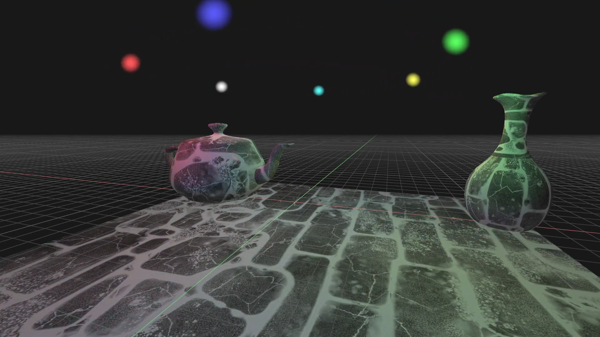
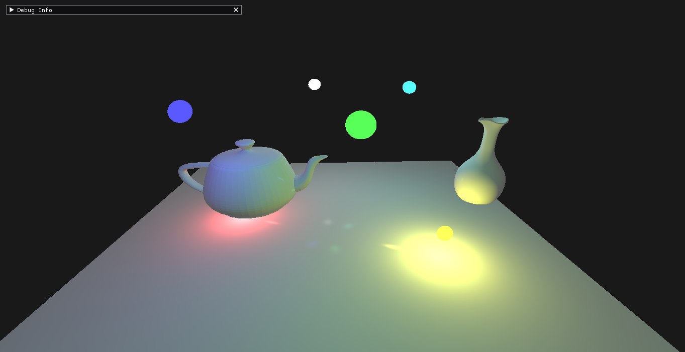
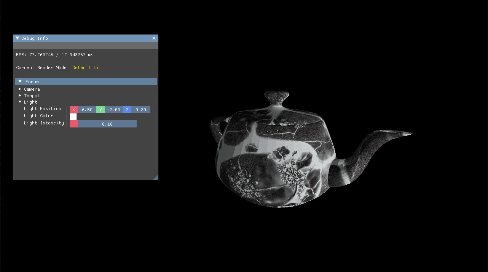
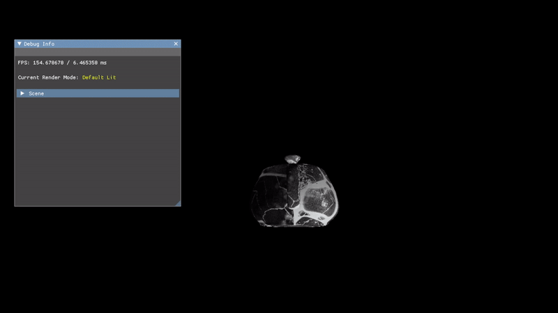

3D Vulkan Renderer
Jan 2022 - Present
Overview
This is a project that I started working on with my friend Henry Chronowski back in early 2022. We aimed to build a renderer from scratch using the Vulkan graphics API, and use it to grow our knowledge about graphics programming. We wanted to explore and gain experience using a modern graphics API that we had not yet been exposed to, as well as gain practical knowledge from architecting a real-time graphics application from the ground up. I still actively work on the project during my free time to brush up my skills or to try something new. There are a bunch of things I would like to add support for in the future which can be found here. Some of those new features include: a material system, physically based rendering, ray-traced lighting, and skeletal animation support.
Material System Progress, Descriptor Indexing, and Dynamic Uniform Buffers (6/4/23 - 8/2/23)
This is one of the largest steps forward I have taken while working on the renderer in a long time. Ever since starting this project I have struggled with how to properly manage descriptor sets and uniform buffers. Thanks to a lot of research, and especially this article from NVIDIA, I was able to wrap my head around how descriptors and uniform buffers should be used. This was a significant step towards getting a working material system.
The next challege I needed to tackle was to allow objects to use different textures in their materials instead of sharing the same texture. To achieve this, I turned to descriptor indexing. Descriptor indexing is quite handy, as it allows you to select a given resource bound to a descriptor set through an index. Instead of binding a single resource per descriptor binding, I can bind an array of recources and index into that array in a shader. For example I can bind an array of albedo textures to binding 0, and select which one I want by indexing into that array in a shader. I take this a step further and do the same process for normal, ambient occlusion, roughness, and height maps as well. This allows me to change which textures a given object is using by sending a texture index to a shader as a push constant.
The last thing I needed to do was add support for PBR materials that did not require textures. To do this, I simply use another uniform buffer containing all of the information required by the PBR shader (albedo color, roughness, ao, etc). The main issue I ran into was that I would need a unique uniform buffer for every object that used this material, which will become problematic and hard to manage for more complex scenes. Welcome dynamic uniform buffers! Dynamic uniform buffers allow you to allocate one large uniform buffer to store data for multiple descriptor sets, which was exactly what I needed to make this work.
PBR Shading, Better Descriptor Sets, and Spot Lights (4/10/23 - 6/3/23)
I took a bit of a break from working on render pass stuff and decided to reorganize the way I was using descriptor sets. Previously I was only using a single descriptor set for everything, but as the project became more complex this became problematic. I now support multiple descriptor sets, which makes it much easier to make more complex shaders. This allowed me to do things like using normal, height, ambient occlusion, and diffuse maps in my lighting shaders. I also upgraded my lighting from Blinn-Phong to a physically based model. Additionally I implemented spot lights, which wasn't too bad as they were very similar to point lights. The next thing that I'd like to tackle is some sort of material system, or go back to shadow mapping.
Multiple Render Passes / Rendering to a viewport / Gizmos (2/12/23 - 4/31/23)
I am currently working on getting my scene to render within an ImGui window, so that I can use the ImGuizmo library to render gizmos on selected objects in the scene. Initially this was supposed to be a very quick implementation before moving on to a material system, but I have since fallen into a massive rabbit hole trying to get this to work. The main issue that I have is that gizmos using the ImGuizmo library can only be rendered within an ImGui window, so I needed a way to capture my scene into a "texture"/framebuffer that I can send to ImGui to display. Welcome multi-pass rendering! This has been the main time sink for me so far. Render passes in Vulkan can get a bit complicated and it has taken some time to wrap my head around them. However, I was able to get multiple passes working! I currently have a render pass for the scene, and a render pass for all of the ImGui UI. The last thing that I think I need to do is take the result of the scene render pass and use it in the ImGui render pass. I haven't quite gotten that working yet, but when I do I'll be sure to update this page!
Rendering Textures / Viewports and Dockspaces (11/15/22 - 1/14/23)
Over the past couple of months I have been working on getting textures working with Vukan (as most of the previous texture work was scrapped during the architecture rework) as well as setting up dockspaces and viewports using ImGui. After a bit of trial and error I was able to get textures working with little issue. The only problem is that every object in the scene uses the same texture, which is why the next major feature I want to implement is a basic material system. Having a material system will allow me to customize the scene on a more granular level instead of a global one. As for dockspaces and viewports, thankfully they were fairly easy to implement since it was mostly usuing already established code from ImGui.
Textures / Grid
{kind=link}
Improved Blinn-Phong Lighting / Multiple Point Lights (11/5/22 - 11/15/22)
Previously our renderer could only support a single point light, but it now has the ability to support any number of point lights. I also updated our lighting to use Blinn-Phong shading instead of regular Phong. Each light's position and intensity can be controlled through our ImGui user interface.
Multiple Point Lights w/ Blinn-Phong
{kind=link}
Core Architecture Rework (9/3/22 - 11/15/22)
The past few months I have been reworking the core architecture of the renderer. Peviously, the way we strucutred our code made it difficult to implement new features and maintain the codebase. I mainly focused on abstracting most of the Vulkan specific code out of the main renderer itself, along with cleaning up some unecessary and unused code. This alone made it much easier to work within the engine.
Lighting Fixes, User Interface (3/11/22 - 5/5/22)
Over the past month or so, I have been working on a lot of backend changes to the renderer, most of which came from trying to implement phong lighting correctly. We had been hung up for weeks on simply trying to get lighting data sent to the GPU correctly. After exploring many different avenues and reading countless sources online, I ran into a small aspect of Vulkan that I hadn't ever seen when working in other frameworks (though I was not building those frameworks from scratch so it may exist): memory alignment of buffers. Our main issue on the CPU side was that our uniform buffers were not packed properly, and thus even though the correct data was being sent to the GPU, it arrived in a different organization than was expected, causing major issues when modifying the lighting data. The way to solve this problem is to simply pack the data according to Vulkan's specifications. This can be achieved in a few different ways. The first way is to use alignas() to force each member of the buffer to be aligned by 16 bytes. While this is handy it doesn't work in every situation, as it is possible to pack data too tightly. Another option is to use vec4s instead of vec3s in the uniform buffer, and just ignore any unneeded values in the shader. Obviously this method works best for vec3s and vec4s because vec4s are already aligned by 16 bytes, but doesn't really make sense for a vec2 or scalar value. The final way is to just stick dummy padding variables in the buffer where needed. We used a combination of these methods to solve our problem, and since we were mostly working with vec3s, we just bumped them up to a vec4 and ignored the w component. In the future we will need to modify our light uniform buffer to hold a struct representing a light, so we can work on having multiple lights in the scene.
Phong Lighting
{kind=link}
The other major feature I was working on was a user interface using the ImGui library. ImGui is an incredibly useful library for setting up good looking UI very quickly. The most difficult thing I ran into when using this library was figuring out how to make it play nice with the existing architecture that I had, but once that problem was solved, the rest was pretty smooth sailing. Currently we have one window that displays debug information as well as scene data. In the future I think I will bring the scene section out into it's own window, and try to set up a scene hierarchy similar to what you may find in Unity or Unreal. For now the scene data allows the user to control the single light and camera in the scene.
ImGui Example
{kind=link}
Camera Controls, Lighting, and Wireframe (2/13/22 - 3/9/22)
Over the past few weeks we've been focusing on adding three main features to our renderer: camera controls, basic lighting, and the option to toggle wireframe rendering. I was responsible for getting the camera controls and wireframe rendering mode working.
Camera Rotation

I originally started with an euler based system for the camera rotations, but this turned out to not be an ideal solution. One of the biggest drawbacks of an euler based system is that it is very easy to run into gimbal lock. Gimbal lock occurs when two axes of rotation align, effectively locking out an axis or rotation. This presents a major problem when working with a 3D camera, so I decieded to switch the camera over to using quaternions instead of euler angles. Once that was working, I added in a bit of smoothing to the camera so it wouldn't look jittery when moving around, and the result was a great success!
Wireframe Mode

Getting wireframe rendering to work was actually much simpler that I thought it would be. It effectively boiled down to adding a second pipeline with the rasterization mode set to VK_POLYGON_MODE_LINE. This meant that I had to abstract the pipeline creation into its own class so that I could easily make multiple of them and adjust their parameters. In the future I would like to have this pipeline use a different shader from the default, so that the wireframe really stands out.
Laying the groundwork (1/23/22 - 2/9/22)
For this first portion of the project, I was mainly resposible for laying most of the groundwork for the renderer. I worked primarily on setting up the main graphics pipeline using the vulkan API, along with implemening support for vertex, index, and uniform buffers. In conbination with Henry's work, we were able to get a Utah Teapot loaded from a file and successfully rendering in 3D space with working texture mapping.
The biggest challenge for me these past few weeks has been trying to wrap my head around and make sure I understand all of the setup involved when using vulkan. The large majority of work that I have done was all setup and due to how explicit vulkan is, I found myself doubling back constantly to make sure what I was doing was correct. Another major challenge I had to face was debugging major bugs or crashes with limited to no error messages. While vulkan does offer some form of error catching, there were many times where the program would crash for no reason. There were many times where I would have to carfully step through the code and retrace my steps to figure out what was wrong.
Time Frame
Jan 2021 - Present
Dev Environment
Visual Studio 2019/2022
My Contributions
- Vulkan Setup and Initialization
- Core Engine Architecture
- Rendering pipeline setup
- Camera Controls
- Blinn-Phong Lighting Implementation
- PBR Shading Implementation
Team
- Ethan Heil
- Henry Chronowski